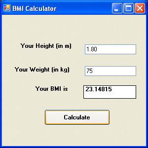

Visual Studio 2013 Lesson 11: Performing Mathematical Operations
[Lesson 10] << [Contents] >> [Lesson 12]
Table 11.1: Mathematical Operators
| Operator | Mathematical Function | Example |
|---|---|---|
| + | Addition | 1+2=3 |
| – | Subtraction | 10-4=6 |
| ^ | Exponential | 3^2=9 |
| * | Multiplication | 5*6=30 |
| / | Division | 21/7=3 |
| Mod | Modulus(returns the remainder of an integer division) | 15 Mod 4=3 |
| \ | Integer Division(discards the decimal places) | 19/4=4 |
Example 11.1
In this program, you need to insert two text boxes, four labels and one button. Click the button and enter the code as shown below. When you run the program, it will perform the four basic arithmetic operations and displays the results on the four labels.
Dim num1, num2, difference, product, quotient
As Single
num1 = TextBox1.Text
num2 = TextBox2.Text
sum=num1+num2
difference=num1-num2
product = num1 * num2
quotient=num1/num2
Label1.Text=sum
Label2.Text=difference
Label3.Text = product
Label4.Text = quotient
End Sub
Example 11.2
This Visual Studio 2013
program can use Pythagoras
Theorem to calculate the length of hypotenuse c given the length of the
adjacent side a and the opposite side b. In case you have forgotten the
formula for the Pythagoras Theorem, it is written as
c^2=a^2+b^2
Private Sub Button1_Click(ByVal sender As System.Object, ByVal e As
System.EventArgs) Handles Button1.Click
Dim a, b, c As Single
a = TextBox1.Text
b = TextBox2.Text
c=(a^2+b^2)^(1/2)
Label3.Text=c
End Sub
Example 11.3: BMI Calculator
A lot of people are obese now and it could affect their health seriously . Obesity has proven by the medical experts to be a one of the main factors that brings many adverse medical problems, including the the cardiovascular disease. If your BMI is more than 30, you are considered obese. You can refer to the following range of BMI values for your weight status.
Underweight = <18.5
Normal weight = 18.5-24.9
Overweight = 25-29.9
Obesity = BMI of 30 or greater
In order to calculate your BMI, you do not have to consult your doctor, you can just use a calculator or a home made computer program, this is exactly what I am showing you here. The BMI calculator is a Visual Basic program that can calculate the body mass index, or BMI of a person based on the body weight in kilogram and the body height in meter. BMI can be calculated using the formula weight/( height )^2, where weight is measured in kg and height in meter. If you only know your weight and height in lb and feet, then you need to convert them to the metric system .
Private Sub Button1_Click(ByVal sender As System.Object, ByVal e As System.EventArsgs) Handles Button1.Click
Dim height, weight, bmi As Single
height = TextBox1.Text
weight = TextBox2.Text
bmi = (weight) / (height ^ 2)
Label4.Text = bmi
End Sub
The output is shown in the Figure 11.1 below. In this example, your height is 1.80m( about 5 foot 11),your weight is 75 kg( about 168Ib), and your BMI is about 23.14815. The reading suggests that you are healthy. (Note; 1 foot=0.3048, 1 lb=.45359237 kilogram)

From the above examples, you can see that writing Visual Studio 2013 code that involve arithmetic operations is relatively easy. Here are more arithmetic projects you work on:
Area of a triangle
Area of a rectangle
Area of a circle
Volume of a cylinder
Volume of a cone
Volume of a sphere
Compound interest
Future value
Mean
Variance
Sum of angles in polygons
Conversion of lb to kg
Conversion of Fahrenheit to Celsius